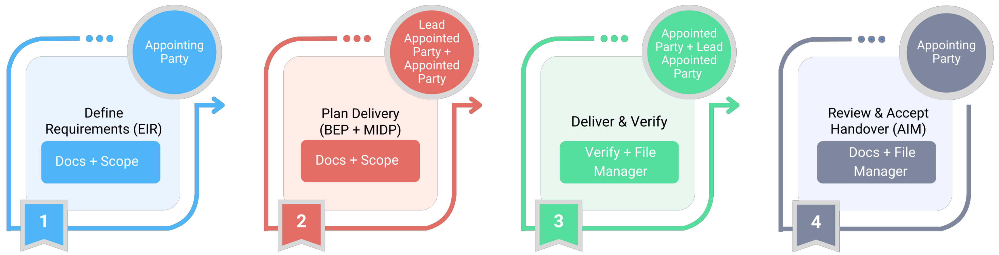
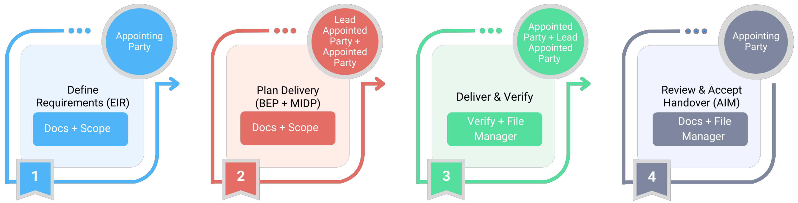

Ready to run a project the way real teams do it? This assignment walks you through the entire information management workflow inside Plannerly - from the Owner’s goals → to clear requirements → to delivery planning → to verified outputs.
Less theory
You will do the workflow yourself, step-by-step.
Real roles
Rotate through the key roles used on ISO 19650 projects.
Practical outcome
Understand how structure reduces rework and improves coordination.
Background
Throughout this assignment, you’ll see how project information moves through a real ISO 19650-aligned workflow: Owner goals → clear requirements → delivery planning → verified outputs.
Instead of reading theory, you will do the workflow yourself. Plannerly will be your workspace to define what information is needed, organise it, structure responsibilities, and check that the model meets the agreed requirements - before handover.
Roles you will experience
Appointing Party (client/owner)
Defines the goals and what information is required.
Lead Appointed Party + Appointed Parties
Plans delivery, assigns responsibilities, coordinates outputs, and supports verification.
Get your Plannerly workspace ready
These are the steps you must complete to access the assignment. If you are already inside Plannerly, you have probably done most of these already - use this as a quick checklist.
1. Sign in to Plannerly
If your university provides access, sign in using your university Plannerly account. If not, create a free account at plannerly.com.
2. Create your project
- Go to your Projects workspace and click New Project. Give your project a suitable name. Once the project is created, review the project settings and add key details such as the project ID, location, and other basic information.
- In the Docs module, go to Plannerly Templates → ISO 19650 Example Templates (English) and add the Information Management Lab to your project.

.png)
 

3. Work individually or as a group
We recommend using a free Plannerly account, as this gives you access to the demo models required for the assignment. Always follow your instructor’s requirements.
Here’s the sequence of tasks you’ll complete
The diagram below shows the sequence of tasks you will complete. Complete the tasks in order, starting with Task 1 – Define the Exchange Information Requirements (EIR).
For training purposes, this assignment uses a simplified and condensed version of ISO 19650 workflows.
.png)